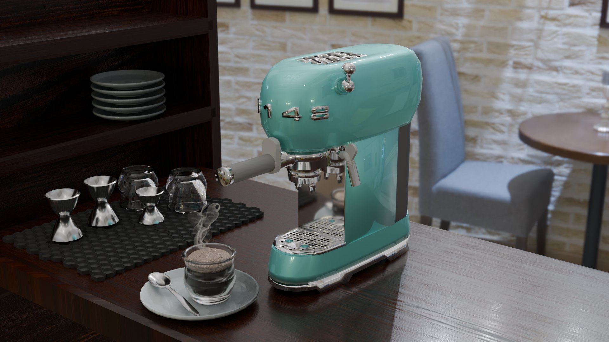
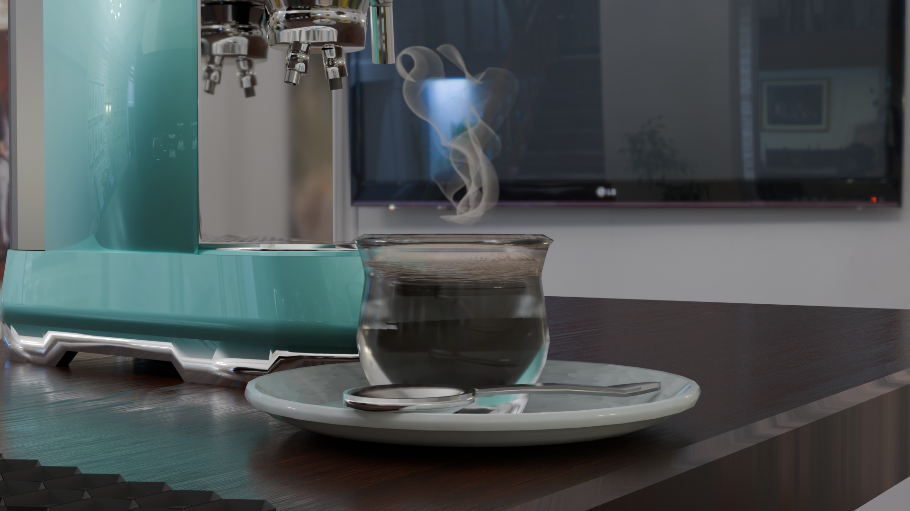
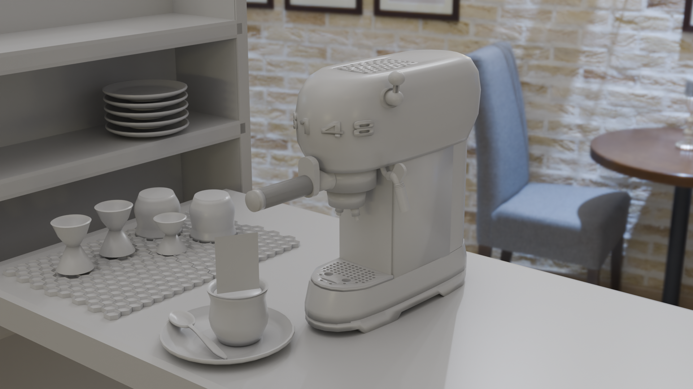

Creative Technology Portfolio
Home
Web-Based IK Rig & Keyframe Editor
Node Graph Visualizer
OpenGL Mesh Viewer
C++ Ray Tracer
Python Ray Tracer (Blender Plugin)
Blender Projects
Interactive Lite-Brite Toy
VR Music Video
Animation Reel
Creative Technology Portfolio
Blender Projects
Final Render for Stanford CS148
 

Blender Recreation of my iMac
Succulent
« Previous
Next »